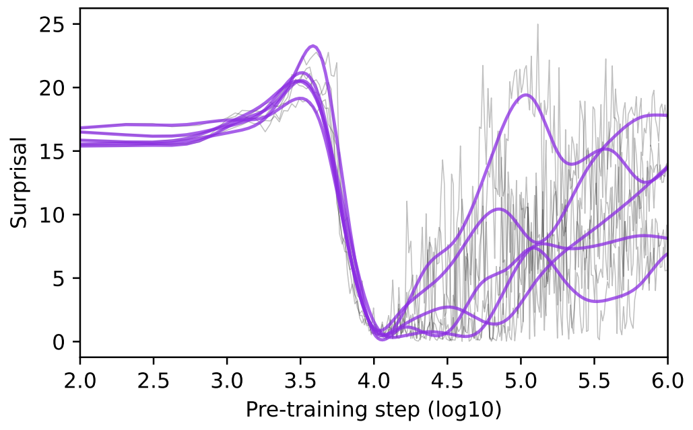
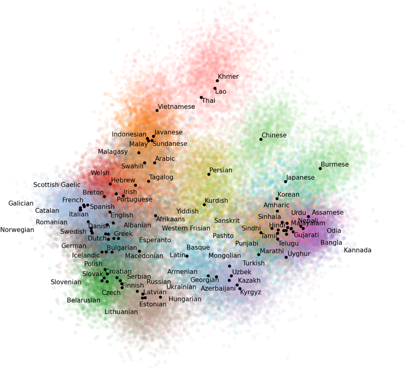

Tyler Chang
PhD Student at UC San Diego.
Hello!
I am a cognitive science PhD student at UC San Diego working on the analysis of large language models, particularly during pretraining.
My research aims to enable more transparent, inclusive, and auditable language technologies.
My CV is [here].

Previously, I've spent time working at Google DeepMind, Google Research, and Amazon Science.
I completed my undergrad at Carleton College in Northfield, Minnesota, majoring in math and cognitive science.
Outside of research, I enjoy playing piano, running, and taking blurry photos in the ocean. For questions about my research, contact me at tachang@ucsd.edu!
Recent Highlights
- We published a [blog post], [preprint], and [demo] for our work at Google DeepMind scaling training data attribution methods to LLM pretraining!
- Our [paper] on the curse of multilinguality in language models received an outstanding paper award at EMNLP 2024!
- We released [Goldfish], a suite of small, comparable monolingual language models for 350 languages!
Select Publications
[Google Scholar]
[Github]
Pretraining dynamics and language acquisition
Chang, T. A., Rajagopal, D., Bolukbasi, T., Dixon, L., & Tenney, I. (under review). Scalable influence and fact tracing for large language model pretraining. [Preprint] [Blog Post] [Demo]
Chang, T. A., Tu, Z., & Bergen, B. K. (2024). Characterizing learning curves during language model pre-training: Learning, forgetting, and stability. Transactions of the Association for Computational Linguistics (TACL). [Preprint]
Unger, L., Chang, T. A., Savic, O., Bergen, B. K., & Sloutsky, V. M. (2024). When is a word in good company for learning? Developmental Science. [Paper]
Multilinguality
Chang, T. A., Arnett, C., Tu, Z., & Bergen, B. K. (under review). Goldfish: Monolingual language models for 350 languages. [Preprint] [Models] [Code]
Chang, T. A., Arnett, C., Tu, Z., & Bergen, B. K. (2024). When is multilinguality a curse? Language modeling for 250 high- and low-resource languages. Proceedings of the Conference on Empirical Methods in Natural Language Processing (EMNLP). Received an outstanding paper award. [Preprint]
Arnett, C.*, Chang, T. A.*, & Bergen, B. K. (2024). A bit of a problem: Measurement disparities in dataset sizes across languages. Proceedings of the Annual Meeting of the Special Interest Group on Under-Resourced Languages (workshop at LREC-COLING). *Equal contribution. [Preprint]
Other publications
Chang, T. A., & Bergen, B. K. (2024). Language model behavior: A comprehensive survey. Computational Linguistics. [Paper] [Website]
Chang, T. A.*, Tomanek, K.*, Hoffmann, J., Thain, N., van Liemt, E., Meier-Hellstern, K., & Dixon, L. (2024). Detecting hallucination and coverage errors in retrieval augmented generation for controversial topics. Proceedings of the Joint International Conference on Computational Linguistics, Language Resources, and Evaluation (LREC-COLING). *Equal contribution. [Preprint]
Shah, C.*, Chandak, Y.*, Mane, A.*, Bergen, B. K., & Chang, T. A. (2024). Correlations between multilingual language model geometry and crosslingual transfer performance. Proceedings of the Joint International Conference on Computational Linguistics, Language Resources, and Evaluation (LREC-COLING). *Undergraduate mentees.
Arnett, C.*, Rivière, P. D.*, Chang, T. A., & Trott, S. (2024). Different tokenization schemes lead to comparable performance in Spanish number agreement. Proceedings of the SIGMORPHON Workshop on Computational Research in Phonetics, Phonology, and Morphology (workshop at NAACL). *Equal contribution. [Preprint]
Michaelov, J. A.*, Arnett, C.*, Chang, T. A., & Bergen, B. K. (2023). Structural priming demonstrates abstract grammatical representations in multilingual language models. Proceedings of the Conference on Empirical Methods in Natural Language Processing (EMNLP). *Equal contribution. [Paper]
Arnett, C., Chang, T. A., Michaelov, J., & Bergen, B. K. (2023). Crosslingual structural priming and the pre-training dynamics of bilingual language models. 3rd Multilingual Representation Learning Workshop (workshop at EMNLP). Extended abstract. [Abstract]
Chang, T. A., Halder, K., Anna John, N., Vyas, Y., Benajiba, Y., Ballesteros, M., & Roth, D. (2023). Characterizing and measuring linguistic dataset drift. Proceedings of the 61st Annual Meeting of the Association for Computational Linguistics (ACL). [Paper] [Code]
Trott, S.*, Jones, C. R.*, Chang, T. A., Michaelov, J. A., & Bergen, B. K. (2023). Do large language models know what humans know? Cognitive Science. *Equal contribution. [Paper]
Jones, C. R., Chang, T. A., Coulson, S., Michaelov, J. A., Trott, S., & Bergen, B. K. (2022). Distributional semantics still can’t account for affordances. Proceedings of the 44th Annual Conference of the Cognitive Science Society (CogSci). [Paper]
Chang, T. A., Xu, Y., Xu, W., & Tu, Z. (2021). Convolutions and self-attention: Re-interpreting relative positions in pre-trained language models. Proceedings of the 59th Annual Meeting of the Association for Computational Linguistics and the 11th International Joint Conference on Natural Language Processing (ACL-IJCNLP). [Paper] [Code]
Xu, W., Xu, Y., Chang, T. A., & Tu, Z. (2021). Co-scale conv-attentional image transformers. Proceedings of the IEEE/CVF International Conference on Computer Vision (ICCV). [Paper] [Code]
Chang, T. A., & Rafferty, A. N. (2020). Encodings of source syntax: Similarities in NMT representations across target languages. Proceedings of the 5th Workshop on Representation Learning for NLP (workshop at ACL). [Link]